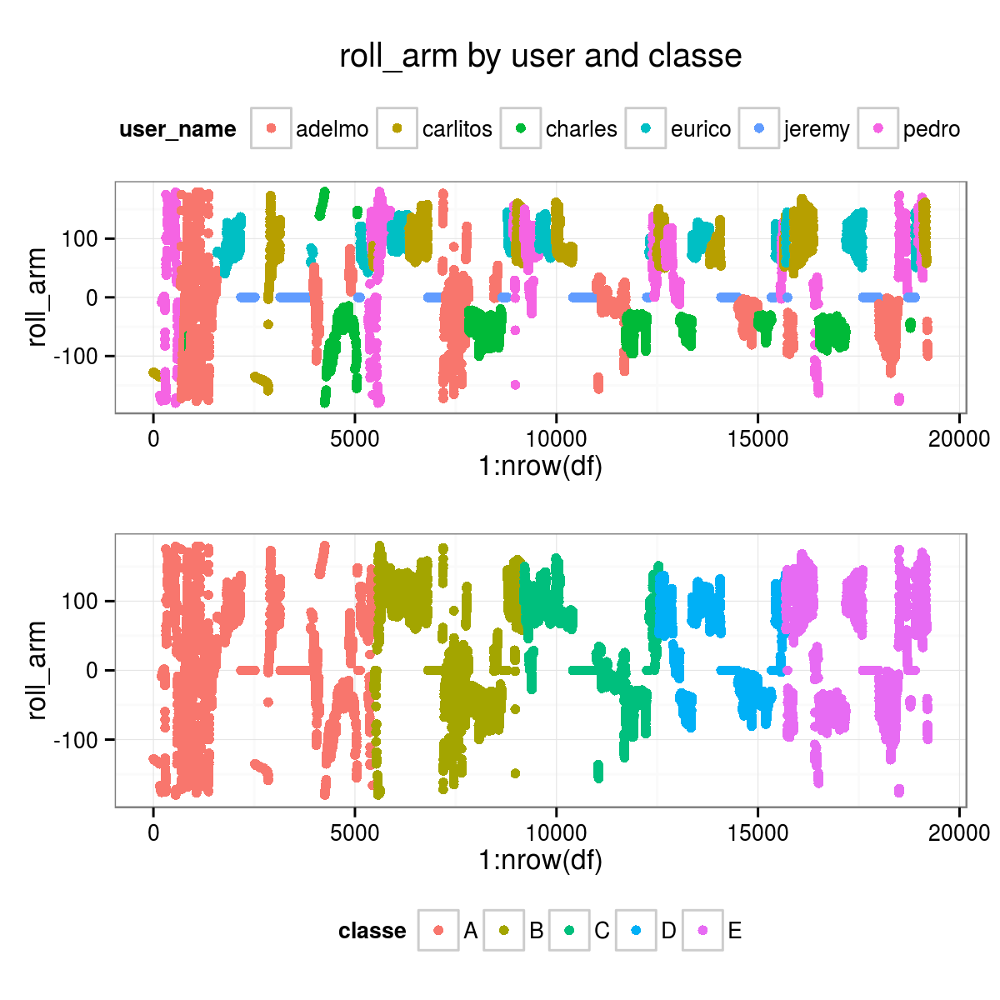
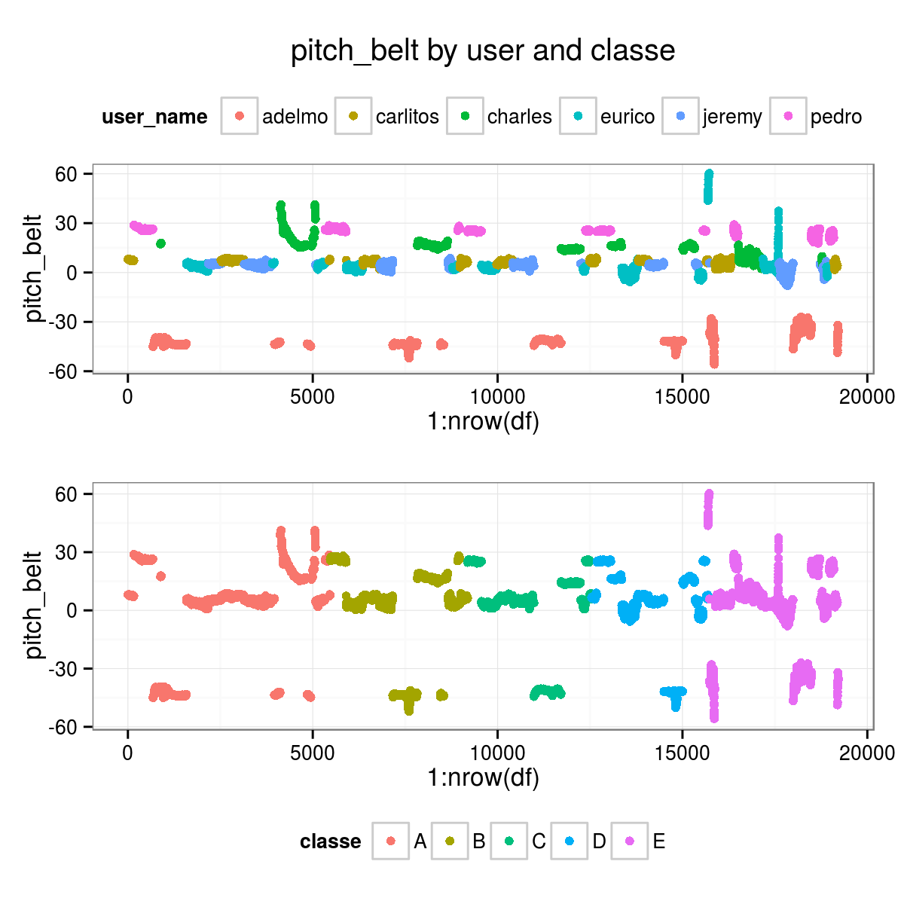
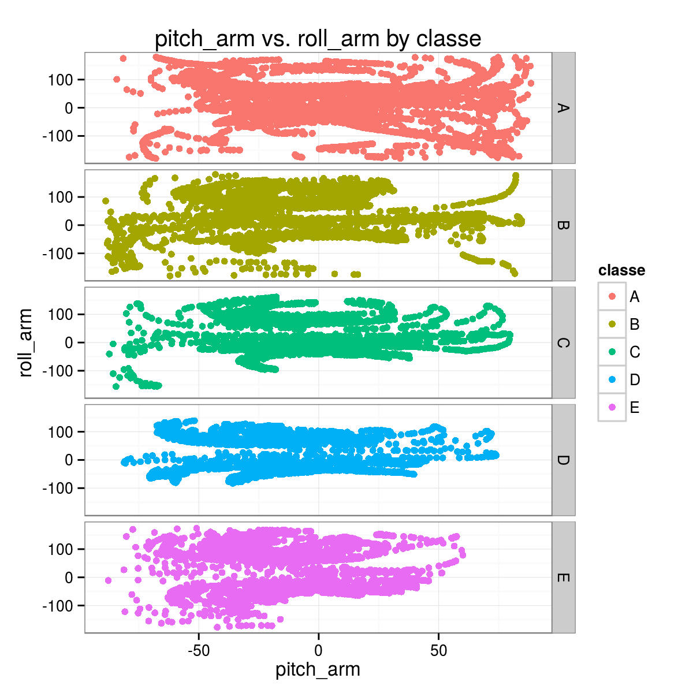
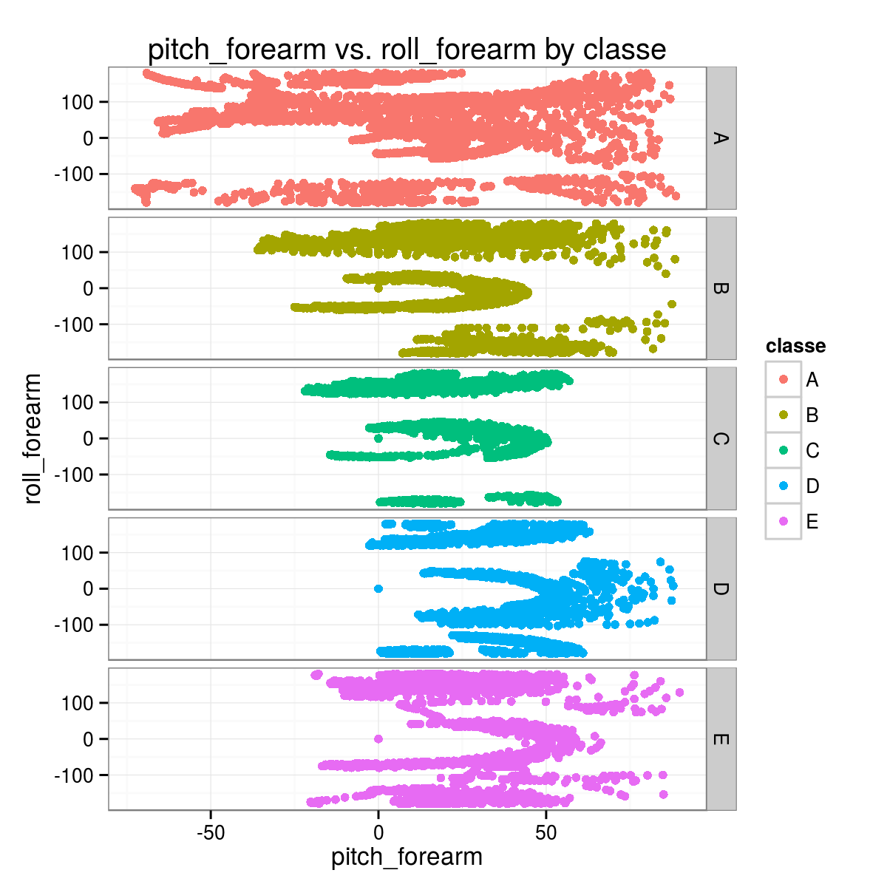
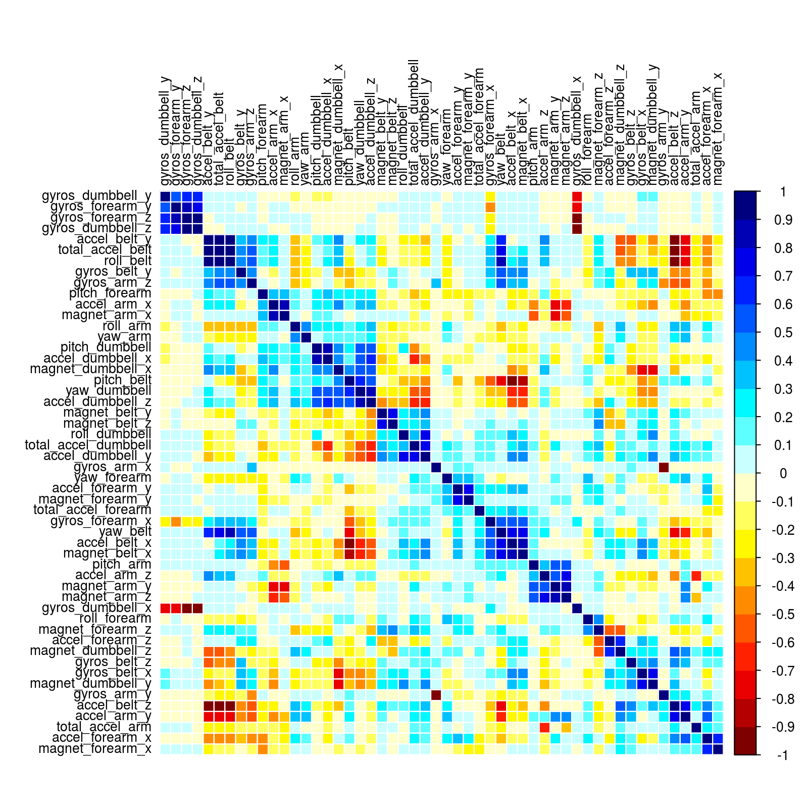
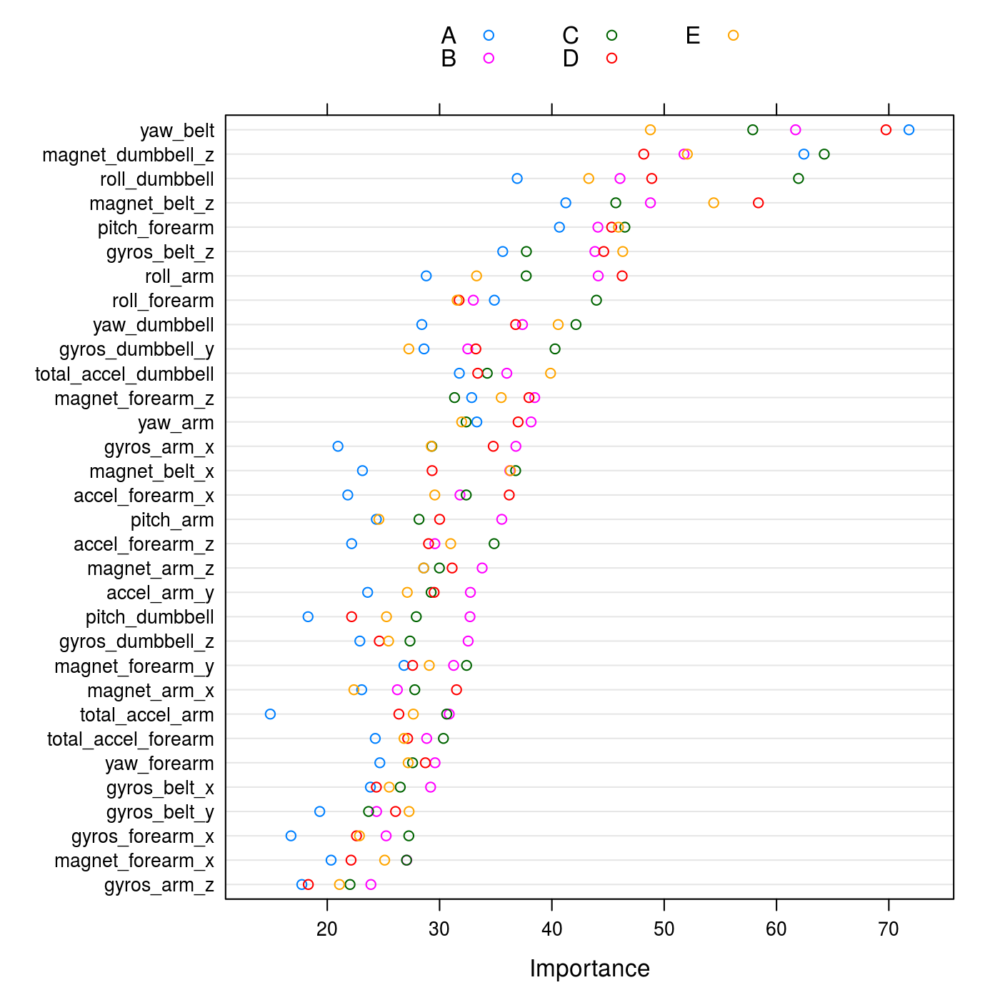
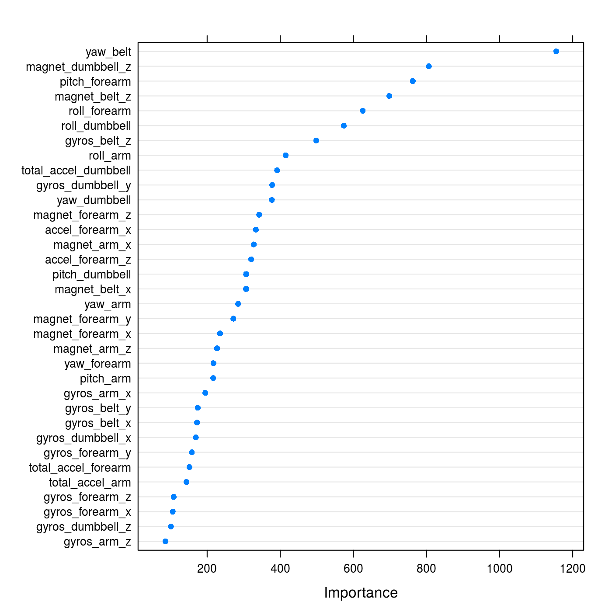
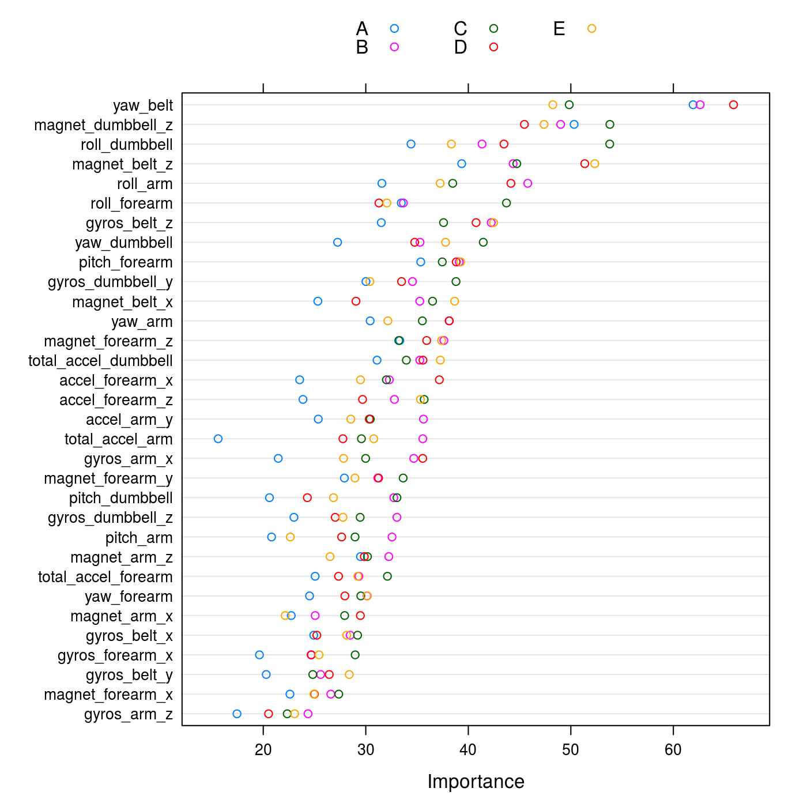

The rapid diffusion of sensors able to record physical parameters associated with motion (e.g. accelerometers), in dedicated devices and more importantly in general consumer electronics available/used by a broader population has sparked a great interest in developing applications taking advantage of these motion-related data. One area of particular interest concerns fitness-related activities.
This report summarizes the results of the development, and testing, of a Machine Learning model able to recognize the quality of a simple weight lifting exercise, namely whether or not it was performed appropropriately (and hence safely and effectively).
We used the dataset put together by the research group on Human Activity Recognition at the PUC of Rio de Janeiro.
We tested three types of ML algorithms, all tree-based methods: CART trees, boosted trees, and random forest.
The first two methods failed to yield high quality results. This may have been caused by less than ideal choice of parameters, although in most cases we run them with the default values from caret, which are expected to be reasonable for decent results.
Random forest models produced high quality results, with accuracies exceeding 99%, both in the built-in Out Of the Bag resampling, and on our separate testing subset.
Beside its clearly better performance, the choice of a random forest as an ensemble method is supported by its ability to handle multi-class problems.
We ran random forest models with three different internal cross-validation setups (implemented through the trainControl() function of caret): * 4-fold Cross-Validation, * bootstrap, and * Leave Group Out Cross Validation.
As noted, the trained models achieved exceptional accuracy in the ability of predicting the outcome variable classe, not only when tested against the 20-entries project benchmark, but more importantly when tested against the portion (25%) of the full dataset that we set aside for __validation_.
The results of a random forest model are not easily interpretable, even in presence of physically/motion based predictors. Nevertheless, as illustrated in some example plots, the data contain fairly clear pattern and differences between categories of exercise quality, that can be related to the slight differences in the motion of the body and weight dumbbell, and that are apparently very well picked out by the algorithm.
The data for the project were made available from the Coursera ML course webpage. Two separate sets were posted:
The dataset comprises 160 variables:
classe, taking values A, B, C, D, E).user_name).raw_timestamp_part_1, raw_timestamp_part_2, cvtd_timestamp.new_window, num_window.As described in the paper by Velloso et al. [REF], four inertial measurement units (IMU) where setup, placed
on belt, arm, forearm, dumbbell. Each sensor measured 3-axes acceleration, gyroscope and magnetometer data at high cadence (45 Hz). These data were processed to yield 13 timed variables for each sensor:
For instance, for the belt sensor the basic timed data are: total_accel_belt, roll_belt, pitch_belt, yaw_belt, gyros_belt_x, gyros_belt_y, gyros_belt_z, accel_belt_x, accel_belt_y, accel_belt_z, magnet_belt_x, magnet_belt_y, magnet_belt_z.
The dataset therefore comprises \(4 \times 13 = 52\) basic timed data.
In addition to these, several statistical summaries are computed and reported for each exercise window, for each sensor:
total_accel, its variance var_accel.avg, stddev, var, kurtosis, skewness, max, min, amplitude (\(3 \times 8\) variables).These \(1 + 24 = 25\) statistical summaries for each sensor add another \(100\) variables to the dataset for a total of \(152\) variables.
It is worth emphasizing that the dataset presents timed and summary variables all together in one table. While this may be practically convenient, it makes this dataset un-tidy by combining variables of different nature. Fortunately the two types of variables can be easily separated on the basis of the value of the new_window auxiliary variable, which has value no for entries corresponding to timed data, and yes for their statistical summaries over each exercise window.
full <- read.csv("./pml-training.csv", na.strings=c("#DIV/0!","","NA"), stringsAsFactors=FALSE)
full <- add_new_variables(full)
alt.full <- tidy_df(full)TEST <- read.csv("./pml-testing.csv", na.strings=c("#DIV/0!","","NA"), stringsAsFactors=FALSE)
alt.TEST <- tidy_df(TEST)Some variables should be discarded because associated with very specific aspects of the experiment that should be irrelevant from the point of view of its goal, such as window flags and time stamps.
These are the excluded variables: X, user_name, new_window, num_window, cvtd_timestamp, raw_timestamp_part_1, raw_timestamp_part_2.
Beside their intrinsic irrelevance, keeping these in would likely strongly drive the results in a completely spurious and meaningless way, because for instance the algorithm may hook on the user_name or num_window.
new_window variableTo the best of my understanding, the dataset combines two different kinds of observations:
num_window variable).new_window == "no".new_window == "yes", andWe restricted our analysis to the 52 variables representing individual timed measurements, discarding the summary data.
alt.full <- subset(alt.full, new_window == "no")
alt.full.good <- select_proper_vars(alt.full)
alt.TEST.good <- select_proper_vars(alt.TEST)
alt.user <- alt.full$user_nameWe also filtered out variables with NA, which basically means filtering against the summary variables.
# columns without ANY NA
alt.tt <- colSums(is.na(alt.full.good)) == 0
alt.full.select <- alt.full.good[, alt.tt]
alt.TEST.select <- alt.TEST.good[, alt.tt]user_name and classeThese kind of plots shows that some of the features seem to correlated very strongly with the user, even more than with their classe, somewhat oddly.
This suggest that the training to predict the quality parameter of the weight lifting exercise (classe) that we can achieve with this dataset may not be easily generalized.


classeThis second set of example plots shows that there are indeed some reasonably recognizable patterns allowing to distinguish between different classe categories.
The expectation is that the ML algorithm will be able to identify them and build on them a classification scheme.


We checked the dataset for un-informative predictors, namely variables taking (nearly) unique values or having very little variance in their values.
The caret package provides a very convenient function to perform this quality-check, nearZeroVar().
None of the 52 features meets the criteria for exclusion on the basis of near Zero Variance.
The full results of running it on our dataset (nearZeroVar(alt.full.select, saveMetrics=TRUE)) are reported in the Appendix.
The presence of correlated predictor is undesirable because it can bias/mislead the modeling and in any case it may lead to run a model with an unnecessarily large(r) number of predictors. Although some ML algorithms are not negatively affected, it is generally safe to exclude correlated pr edictors.
For tree-based models it is actually recommended to clean the data set of correlated predictors because they end up sharing their overall importance, thus appearing to be less significant than they actually are.
We took advantage of the caret function findCorrelation() to identify variables whose absolute correlation value exceeds a set threshold (we chose 0.75) and obtain a list of variables to exclude selected among those with high correlation.
The actual predictors filtering was done applying this method just on the training subset (see below).
For validation purposes we split the full dataset in two subsets:
This training / testing split should not be confused with the original two datasets, which unfortunately are named also training and testing.
We are splitting the original training large dataset in two to be able to have an independent validation of the models, beyond what may already be done internally by some ML algorithms or by caret wrapped around them (e.g. by bootstrapping, or the built-in randomization and subsetting of random forest methods).
seed.split <- 12468
set.seed(seed.split)
i.train.alt <- createDataPartition(y = alt.full.select$classe, p=0.75, list=FALSE)
alt.training <- alt.full.select[i.train.alt, ]
alt.testing <- alt.full.select[-i.train.alt, ]In the spirit of truly preserving the independence of the testing data subset, we performed the correlation-based feature reduction on the basis of the correlation between variables computed on the training subset instead of the full dataset, and applied the same variables filtering to the testing subset.
# correlation filtering done on the training subset
alt.allCorr <- cor(alt.training[, -1])
i.fC.75.alt <- findCorrelation(alt.allCorr, cutoff=0.75)The following plot shows the correlation matrix, with variables ordered on the basis of their clustering.
corrplot(alt.allCorr, order="hclust", method="color",
col=color1(20), cl.length=21, tl.cex=0.8, tl.col="black", mar=c(1,1,1,0))
On the basis of their correlation, with a threshold of 0.75, these are the variables that would be excluded.
# variables to be excluded
colnames(alt.training)[i.fC.75.alt+1]
## [1] "accel_belt_z" "roll_belt" "accel_belt_y" "total_accel_belt"
## [5] "accel_dumbbell_z" "accel_belt_x" "pitch_belt" "magnet_dumbbell_x"
## [9] "accel_dumbbell_y" "magnet_dumbbell_y" "accel_dumbbell_x" "accel_arm_x"
## [13] "accel_arm_z" "magnet_arm_y" "magnet_belt_y" "accel_forearm_y"
## [17] "gyros_arm_y" "gyros_forearm_z" "gyros_forearm_y" "gyros_dumbbell_x"
# variables selection
alt.training.cut75 <- alt.training[, -(i.fC.75.alt+1)]
alt.testing.cut75 <- alt.testing[, -(i.fC.75.alt+1)]We tested three types of ML algorithms, all within the framework provided by caret, and all generally speaking tree-based models.
rpart2.gbm.rf.The first two methods failed to yield high quality results, in fact in some cases their performance on the testing subset was very poor.
This may have been caused by less than ideal choice of parameters, but in most cases we let the modeling run with the default values from caret, which are expected to be reasonable for decent results.
We have to acknowledge that in some cases, in particular for the gbm models, the running time turned out to be very long and the memory requirements large enough to make it impractical, and we did not pursue those models more extensively.
On the other hand random forest models produced high quality results, with accuracies exceeding 99%, both in the built-in Out Of the Bag resampling, and on our separate testing subset.
In the next three sections we illustrate the results of random forest models run with three different internal cross-validation setups, implemented through the trainControl() function of caret:
cv: Cross-Validation, 4-fold (i.e. 75%/25% splits).boot (the default): bootstrap, 25 repeats.In all cases we also tried a set of values for mtry, which regulates how many predictors are selected in the random forest random subsetting of variables.
With mtry = 2, 6, 10, 18, 26, 34.
mtry.values <- c(2, 6, 10, 18, 26, 34)
ctrl.rf1c <- trainControl(method = "cv", number=4)
seed.rf1c <- 16790; set.seed(seed.rf1c)
mod.alt.rf1c <- train(x = alt.training.cut75[, -1],
y = alt.training.cut75$classe,
method = "rf",
trControl = ctrl.rf1c,
tuneGrid = data.frame(mtry = mtry.values),
importance = TRUE,
proximity = TRUE)mod.alt.rf1c
## Random Forest
##
## 14414 samples
## 32 predictors
## 5 classes: 'A', 'B', 'C', 'D', 'E'
##
## No pre-processing
## Resampling: Cross-Validated (4 fold)
##
## Summary of sample sizes: 10811, 10810, 10811, 10810
##
## Resampling results across tuning parameters:
##
## mtry Accuracy Kappa Accuracy SD Kappa SD
## 2 1 1 0.004 0.005
## 6 1 1 0.003 0.004
## 10 1 1 0.003 0.004
## 20 1 1 0.003 0.004
## 30 1 1 0.003 0.004
## 30 1 1 0.003 0.004
##
## Accuracy was used to select the optimal model using the largest value.
## The final value used for the model was mtry = 6.
mod.alt.rf1c$finalModel
##
## Call:
## randomForest(x = x, y = y, mtry = param$mtry, importance = TRUE)
## Type of random forest: classification
## Number of trees: 500
## No. of variables tried at each split: 6
##
## OOB estimate of error rate: 0.61%
## Confusion matrix:
## A B C D E class.error
## A 4100 2 0 1 1 0.0009747
## B 17 2762 10 0 0 0.0096809
## C 0 19 2484 10 1 0.0119332
## D 1 0 21 2337 2 0.0101652
## E 0 0 1 2 2643 0.0011338
mod.alt.rf1c$results
## mtry Accuracy Kappa AccuracySD KappaSD
## 1 2 0.9898 0.9871 0.003952 0.005002
## 2 6 0.9912 0.9889 0.002983 0.003775
## 3 10 0.9901 0.9875 0.003060 0.003873
## 4 18 0.9880 0.9848 0.003000 0.003797
## 5 26 0.9830 0.9785 0.003199 0.004049
## 6 34 0.9778 0.9719 0.003414 0.004320pred.rf1c.test75 <- predict(mod.alt.rf1c, alt.testing.cut75, type="raw")
# confusion matrix
confusionMatrix(alt.testing.cut75$classe, pred.rf1c.test75)
## Confusion Matrix and Statistics
##
## Reference
## Prediction A B C D E
## A 1364 3 0 0 0
## B 0 919 7 0 3
## C 0 6 824 8 0
## D 0 0 12 772 2
## E 0 0 0 1 881
##
## Overall Statistics
##
## Accuracy : 0.991
## 95% CI : (0.988, 0.994)
## No Information Rate : 0.284
## P-Value [Acc > NIR] : <2e-16
##
## Kappa : 0.989
## Mcnemar's Test P-Value : NA
##
## Statistics by Class:
##
## Class: A Class: B Class: C Class: D Class: E
## Sensitivity 1.000 0.990 0.977 0.988 0.994
## Specificity 0.999 0.997 0.996 0.997 1.000
## Pos Pred Value 0.998 0.989 0.983 0.982 0.999
## Neg Pred Value 1.000 0.998 0.995 0.998 0.999
## Prevalence 0.284 0.193 0.176 0.163 0.185
## Detection Rate 0.284 0.191 0.172 0.161 0.183
## Detection Prevalence 0.285 0.193 0.175 0.164 0.184
## Balanced Accuracy 1.000 0.994 0.987 0.992 0.997pred.rf1c.TEST <- predict(mod.alt.rf1c, alt.TEST.select, type="raw")
# comparison with "truth"
pred.rf1c.TEST == answers
## [1] TRUE TRUE TRUE TRUE TRUE TRUE TRUE TRUE TRUE TRUE TRUE TRUE TRUE TRUE TRUE TRUE TRUE TRUE TRUE
## [20] TRUEvarImp(mod.alt.rf1c, useModel=TRUE, scale=FALSE)
## rf variable importance
##
## variables are sorted by maximum importance across the classes
## only 20 most important variables shown (out of 32)
##
## A B C D E
## yaw_belt 71.8 61.7 57.9 69.8 48.8
## magnet_dumbbell_z 62.4 51.8 64.3 48.2 52.1
## roll_dumbbell 36.9 46.1 62.0 48.9 43.3
## magnet_belt_z 41.2 48.8 45.7 58.4 54.4
## pitch_forearm 40.7 44.1 46.5 45.3 45.9
## gyros_belt_z 35.6 43.8 37.7 44.6 46.3
## roll_arm 28.8 44.1 37.7 46.3 33.3
## roll_forearm 34.9 33.0 44.0 31.7 31.6
## yaw_dumbbell 28.4 37.4 42.1 36.8 40.6
## gyros_dumbbell_y 28.6 32.5 40.3 33.2 27.3
## total_accel_dumbbell 31.8 36.0 34.2 33.4 39.9
## magnet_forearm_z 32.9 38.5 31.3 38.0 35.5
## yaw_arm 33.3 38.1 32.4 37.0 32.0
## gyros_arm_x 21.0 36.8 29.3 34.8 29.3
## magnet_belt_x 23.1 36.3 36.8 29.3 36.3
## accel_forearm_x 21.8 31.8 32.4 36.2 29.6
## pitch_arm 24.4 35.5 28.2 30.0 24.6
## accel_forearm_z 22.2 29.6 34.9 29.0 31.0
## magnet_arm_z 28.6 33.8 30.0 31.1 28.6
## accel_arm_y 23.6 32.7 29.2 29.5 27.1# plot(varImp(mod.alt.rf1c, useModel=TRUE, scale=FALSE), top=ncol(mod.alt.rf1c$trainingData)-1)
dotPlot(varImp(mod.alt.rf1c, useModel=TRUE, scale=FALSE), top=ncol(mod.alt.rf1c$trainingData)-1)
With mtry = 2, 6, 10, 18, 26, 34
mtry.values <- c(2, 6, 10, 18, 26, 34)
seed.rf1b <- 16789; set.seed(seed.rf1b)
mod.rf1b <- train(x = training.cut75[, -1],
y = training.cut75$classe,
method = "rf",
tuneGrid = data.frame(mtry = mtry.values))mod.rf1b
## Random Forest
##
## 14718 samples
## 34 predictors
## 5 classes: 'A', 'B', 'C', 'D', 'E'
##
## No pre-processing
## Resampling: Bootstrapped (25 reps)
##
## Summary of sample sizes: 14718, 14718, 14718, 14718, 14718, 14718, ...
##
## Resampling results across tuning parameters:
##
## mtry Accuracy Kappa Accuracy SD Kappa SD
## 2 1 1 0.002 0.003
## 6 1 1 0.002 0.002
## 10 1 1 0.001 0.002
## 20 1 1 0.002 0.002
## 30 1 1 0.002 0.003
## 30 1 1 0.003 0.004
##
## Accuracy was used to select the optimal model using the largest value.
## The final value used for the model was mtry = 6.
mod.rf1b$finalModel
##
## Call:
## randomForest(x = x, y = y, mtry = param$mtry)
## Type of random forest: classification
## Number of trees: 500
## No. of variables tried at each split: 6
##
## OOB estimate of error rate: 0.64%
## Confusion matrix:
## A B C D E class.error
## A 4182 3 0 0 0 0.0007168
## B 13 2826 8 0 1 0.0077247
## C 0 19 2530 17 1 0.0144137
## D 0 0 21 2387 4 0.0103648
## E 0 0 2 5 2699 0.0025868
mod.rf1b$results
## mtry Accuracy Kappa AccuracySD KappaSD
## 1 2 0.9880 0.9848 0.002011 0.002541
## 2 6 0.9892 0.9864 0.001674 0.002114
## 3 10 0.9887 0.9857 0.001480 0.001868
## 4 18 0.9866 0.9831 0.001856 0.002344
## 5 26 0.9836 0.9792 0.002145 0.002709
## 6 34 0.9768 0.9707 0.002933 0.003698pred.rf1b.test75 <- predict(mod.rf1b, testing.cut75, type="raw")
# confusion matrix
confusionMatrix(testing.cut75$classe, pred.rf1b.test75)
## Confusion Matrix and Statistics
##
## Reference
## Prediction A B C D E
## A 1393 1 0 0 1
## B 7 936 4 0 2
## C 0 5 845 4 1
## D 0 0 5 799 0
## E 0 0 0 3 898
##
## Overall Statistics
##
## Accuracy : 0.993
## 95% CI : (0.991, 0.995)
## No Information Rate : 0.285
## P-Value [Acc > NIR] : <2e-16
##
## Kappa : 0.991
## Mcnemar's Test P-Value : NA
##
## Statistics by Class:
##
## Class: A Class: B Class: C Class: D Class: E
## Sensitivity 0.995 0.994 0.989 0.991 0.996
## Specificity 0.999 0.997 0.998 0.999 0.999
## Pos Pred Value 0.999 0.986 0.988 0.994 0.997
## Neg Pred Value 0.998 0.998 0.998 0.998 0.999
## Prevalence 0.285 0.192 0.174 0.164 0.184
## Detection Rate 0.284 0.191 0.172 0.163 0.183
## Detection Prevalence 0.284 0.194 0.174 0.164 0.184
## Balanced Accuracy 0.997 0.995 0.993 0.995 0.997pred.rf1b.TEST <- predict(mod.rf1b, TEST.select, type="raw")
# comparison with "truth"
pred.rf1b.TEST == answers
## [1] TRUE TRUE TRUE TRUE TRUE TRUE TRUE TRUE TRUE TRUE TRUE TRUE TRUE TRUE TRUE TRUE TRUE TRUE TRUE
## [20] TRUEvarImp(mod.rf1b, useModel=TRUE, scale=FALSE)
## rf variable importance
##
## only 20 most important variables shown (out of 34)
##
## Overall
## yaw_belt 1155
## magnet_dumbbell_z 806
## pitch_forearm 763
## magnet_belt_z 698
## roll_forearm 626
## roll_dumbbell 574
## gyros_belt_z 499
## roll_arm 415
## total_accel_dumbbell 391
## gyros_dumbbell_y 378
## yaw_dumbbell 377
## magnet_forearm_z 342
## accel_forearm_x 333
## magnet_arm_x 327
## accel_forearm_z 320
## pitch_dumbbell 307
## magnet_belt_x 306
## yaw_arm 285
## magnet_forearm_y 272
## magnet_forearm_x 235# plot(varImp(mod.rf1b, useModel=TRUE, scale=FALSE), top=ncol(mod.rf1b$trainingData)-1)
dotPlot(varImp(mod.rf1b, useModel=TRUE, scale=FALSE), top=ncol(mod.rf1b$trainingData)-1)
With mtry = 2, 4, 6, 8, 10.
mtryValues <- c(2, 4, 6, 8, 10)
ctrl <- trainControl(method = "LGOCV",
classProbs = TRUE)
seed.rf1e <- 17891; set.seed(seed.rf1e)
mod.alt.rf1e <- train(x = alt.training.cut75[, -1],
y = alt.training.cut75$classe,
method = "rf",
tuneGrid = data.frame(mtry=mtryValues),
trControl = ctrl,
importance = TRUE,
proximity = TRUE)mod.alt.rf1e
## Random Forest
##
## 14414 samples
## 32 predictors
## 5 classes: 'A', 'B', 'C', 'D', 'E'
##
## No pre-processing
## Resampling: Repeated Train/Test Splits Estimated (25 reps, 0.75%)
##
## Summary of sample sizes: 10812, 10812, 10812, 10812, 10812, 10812, ...
##
## Resampling results across tuning parameters:
##
## mtry Accuracy Kappa Accuracy SD Kappa SD
## 2 1 1 0.002 0.002
## 4 1 1 0.001 0.002
## 6 1 1 0.001 0.002
## 8 1 1 0.002 0.002
## 10 1 1 0.002 0.002
##
## Accuracy was used to select the optimal model using the largest value.
## The final value used for the model was mtry = 4.
mod.alt.rf1e$finalModel
##
## Call:
## randomForest(x = x, y = y, mtry = param$mtry, importance = TRUE)
## Type of random forest: classification
## Number of trees: 500
## No. of variables tried at each split: 4
##
## OOB estimate of error rate: 0.65%
## Confusion matrix:
## A B C D E class.error
## A 4101 1 0 1 1 0.000731
## B 18 2764 7 0 0 0.008964
## C 0 19 2483 12 0 0.012331
## D 0 0 28 2330 3 0.013130
## E 0 0 1 3 2642 0.001512
mod.alt.rf1e$results
## mtry Accuracy Kappa AccuracySD KappaSD
## 1 2 0.9897 0.9869 0.001745 0.002209
## 2 4 0.9910 0.9887 0.001204 0.001523
## 3 6 0.9910 0.9886 0.001362 0.001724
## 4 8 0.9907 0.9882 0.001660 0.002101
## 5 10 0.9903 0.9877 0.001702 0.002154pred.rf1e.test75 <- predict(mod.alt.rf1e, alt.testing.cut75, type="raw")
# confusion matrix
confusionMatrix(alt.testing.cut75$classe, pred.rf1e.test75)
## Confusion Matrix and Statistics
##
## Reference
## Prediction A B C D E
## A 1365 2 0 0 0
## B 0 920 6 0 3
## C 0 8 823 7 0
## D 0 0 12 771 3
## E 0 0 0 1 881
##
## Overall Statistics
##
## Accuracy : 0.991
## 95% CI : (0.988, 0.994)
## No Information Rate : 0.284
## P-Value [Acc > NIR] : <2e-16
##
## Kappa : 0.989
## Mcnemar's Test P-Value : NA
##
## Statistics by Class:
##
## Class: A Class: B Class: C Class: D Class: E
## Sensitivity 1.000 0.989 0.979 0.990 0.993
## Specificity 0.999 0.998 0.996 0.996 1.000
## Pos Pred Value 0.999 0.990 0.982 0.981 0.999
## Neg Pred Value 1.000 0.997 0.995 0.998 0.998
## Prevalence 0.284 0.194 0.175 0.162 0.185
## Detection Rate 0.284 0.192 0.171 0.161 0.183
## Detection Prevalence 0.285 0.193 0.175 0.164 0.184
## Balanced Accuracy 1.000 0.993 0.987 0.993 0.996pred.rf1e.TEST <- predict(mod.alt.rf1e, alt.TEST.select, type="raw")
# comparison with "truth"
pred.rf1e.TEST == answers
## [1] TRUE TRUE TRUE TRUE TRUE TRUE TRUE TRUE TRUE TRUE TRUE TRUE TRUE TRUE TRUE TRUE TRUE TRUE TRUE
## [20] TRUE# plot(varImp(mod.alt.rf1e, useModel=TRUE, scale=FALSE), top=ncol(mod.alt.rf1e$trainingData)-1)
dotPlot(varImp(mod.alt.rf1e, useModel=TRUE, scale=FALSE), top=ncol(mod.alt.rf1e$trainingData)-1)
alt.statsNA <- as.data.frame(t(sapply(alt.full.good, function(x){ c(good = sum(!is.na(x)), bad = sum(is.na(x)))})))
print(alt.statsNA, quote=FALSE, print.gap=5)
## good bad
## classe 19216 0
## total_accel_belt 19216 0
## var_accel_belt 0 19216
## roll_belt 19216 0
## avg_roll_belt 0 19216
## stddev_roll_belt 0 19216
## var_roll_belt 0 19216
## kurtosis_roll_belt 0 19216
## skewness_roll_belt 0 19216
## min_roll_belt 0 19216
## max_roll_belt 0 19216
## amplitude_roll_belt 0 19216
## pitch_belt 19216 0
## avg_pitch_belt 0 19216
## stddev_pitch_belt 0 19216
## var_pitch_belt 0 19216
## kurtosis_pitch_belt 0 19216
## skewness_pitch_belt 0 19216
## min_pitch_belt 0 19216
## max_pitch_belt 0 19216
## amplitude_pitch_belt 0 19216
## yaw_belt 19216 0
## avg_yaw_belt 0 19216
## stddev_yaw_belt 0 19216
## var_yaw_belt 0 19216
## kurtosis_yaw_belt 0 19216
## skewness_yaw_belt 0 19216
## min_yaw_belt 0 19216
## max_yaw_belt 0 19216
## amplitude_yaw_belt 0 19216
## gyros_belt_x 19216 0
## gyros_belt_y 19216 0
## gyros_belt_z 19216 0
## accel_belt_x 19216 0
## accel_belt_y 19216 0
## accel_belt_z 19216 0
## magnet_belt_x 19216 0
## magnet_belt_y 19216 0
## magnet_belt_z 19216 0
## total_accel_arm 19216 0
## var_accel_arm 0 19216
## roll_arm 19216 0
## avg_roll_arm 0 19216
## stddev_roll_arm 0 19216
## var_roll_arm 0 19216
## kurtosis_roll_arm 0 19216
## skewness_roll_arm 0 19216
## min_roll_arm 0 19216
## max_roll_arm 0 19216
## amplitude_roll_arm 0 19216
## pitch_arm 19216 0
## avg_pitch_arm 0 19216
## stddev_pitch_arm 0 19216
## var_pitch_arm 0 19216
## kurtosis_pitch_arm 0 19216
## skewness_pitch_arm 0 19216
## min_pitch_arm 0 19216
## max_pitch_arm 0 19216
## amplitude_pitch_arm 0 19216
## yaw_arm 19216 0
## avg_yaw_arm 0 19216
## stddev_yaw_arm 0 19216
## var_yaw_arm 0 19216
## kurtosis_yaw_arm 0 19216
## skewness_yaw_arm 0 19216
## min_yaw_arm 0 19216
## max_yaw_arm 0 19216
## amplitude_yaw_arm 0 19216
## gyros_arm_x 19216 0
## gyros_arm_y 19216 0
## gyros_arm_z 19216 0
## accel_arm_x 19216 0
## accel_arm_y 19216 0
## accel_arm_z 19216 0
## magnet_arm_x 19216 0
## magnet_arm_y 19216 0
## magnet_arm_z 19216 0
## total_accel_forearm 19216 0
## var_accel_forearm 0 19216
## roll_forearm 19216 0
## avg_roll_forearm 0 19216
## stddev_roll_forearm 0 19216
## var_roll_forearm 0 19216
## kurtosis_roll_forearm 0 19216
## skewness_roll_forearm 0 19216
## min_roll_forearm 0 19216
## max_roll_forearm 0 19216
## amplitude_roll_forearm 0 19216
## pitch_forearm 19216 0
## avg_pitch_forearm 0 19216
## stddev_pitch_forearm 0 19216
## var_pitch_forearm 0 19216
## kurtosis_pitch_forearm 0 19216
## skewness_pitch_forearm 0 19216
## min_pitch_forearm 0 19216
## max_pitch_forearm 0 19216
## amplitude_pitch_forearm 0 19216
## yaw_forearm 19216 0
## avg_yaw_forearm 0 19216
## stddev_yaw_forearm 0 19216
## var_yaw_forearm 0 19216
## kurtosis_yaw_forearm 0 19216
## skewness_yaw_forearm 0 19216
## min_yaw_forearm 0 19216
## max_yaw_forearm 0 19216
## amplitude_yaw_forearm 0 19216
## gyros_forearm_x 19216 0
## gyros_forearm_y 19216 0
## gyros_forearm_z 19216 0
## accel_forearm_x 19216 0
## accel_forearm_y 19216 0
## accel_forearm_z 19216 0
## magnet_forearm_x 19216 0
## magnet_forearm_y 19216 0
## magnet_forearm_z 19216 0
## total_accel_dumbbell 19216 0
## var_accel_dumbbell 0 19216
## roll_dumbbell 19216 0
## avg_roll_dumbbell 0 19216
## stddev_roll_dumbbell 0 19216
## var_roll_dumbbell 0 19216
## kurtosis_roll_dumbbell 0 19216
## skewness_roll_dumbbell 0 19216
## min_roll_dumbbell 0 19216
## max_roll_dumbbell 0 19216
## amplitude_roll_dumbbell 0 19216
## pitch_dumbbell 19216 0
## avg_pitch_dumbbell 0 19216
## stddev_pitch_dumbbell 0 19216
## var_pitch_dumbbell 0 19216
## kurtosis_pitch_dumbbell 0 19216
## skewness_pitch_dumbbell 0 19216
## min_pitch_dumbbell 0 19216
## max_pitch_dumbbell 0 19216
## amplitude_pitch_dumbbell 0 19216
## yaw_dumbbell 19216 0
## avg_yaw_dumbbell 0 19216
## stddev_yaw_dumbbell 0 19216
## var_yaw_dumbbell 0 19216
## kurtosis_yaw_dumbbell 0 19216
## skewness_yaw_dumbbell 0 19216
## min_yaw_dumbbell 0 19216
## max_yaw_dumbbell 0 19216
## amplitude_yaw_dumbbell 0 19216
## gyros_dumbbell_x 19216 0
## gyros_dumbbell_y 19216 0
## gyros_dumbbell_z 19216 0
## accel_dumbbell_x 19216 0
## accel_dumbbell_y 19216 0
## accel_dumbbell_z 19216 0
## magnet_dumbbell_x 19216 0
## magnet_dumbbell_y 19216 0
## magnet_dumbbell_z 19216 0nzv <- nearZeroVar(alt.full.select, saveMetrics=TRUE)
nzv
## freqRatio percentUnique zeroVar nzv
## classe 1.471 0.02602 FALSE FALSE
## total_accel_belt 1.069 0.15092 FALSE FALSE
## roll_belt 1.086 6.83805 FALSE FALSE
## pitch_belt 1.037 9.53893 FALSE FALSE
## yaw_belt 1.047 10.10616 FALSE FALSE
## gyros_belt_x 1.051 0.72336 FALSE FALSE
## gyros_belt_y 1.149 0.35908 FALSE FALSE
## gyros_belt_z 1.071 0.87948 FALSE FALSE
## accel_belt_x 1.059 0.85346 FALSE FALSE
## accel_belt_y 1.115 0.74417 FALSE FALSE
## accel_belt_z 1.081 1.55600 FALSE FALSE
## magnet_belt_x 1.089 1.70171 FALSE FALSE
## magnet_belt_y 1.097 1.55079 FALSE FALSE
## magnet_belt_z 1.019 2.37302 FALSE FALSE
## total_accel_arm 1.020 0.34346 FALSE FALSE
## roll_arm 51.154 13.75937 FALSE FALSE
## pitch_arm 85.282 15.96066 FALSE FALSE
## yaw_arm 32.282 14.89904 FALSE FALSE
## gyros_arm_x 1.024 3.34617 FALSE FALSE
## gyros_arm_y 1.451 1.95150 FALSE FALSE
## gyros_arm_z 1.119 1.29059 FALSE FALSE
## accel_arm_x 1.018 4.04351 FALSE FALSE
## accel_arm_y 1.169 2.78414 FALSE FALSE
## accel_arm_z 1.139 4.12157 FALSE FALSE
## magnet_arm_x 1.012 6.96295 FALSE FALSE
## magnet_arm_y 1.045 4.53268 FALSE FALSE
## magnet_arm_z 1.028 6.57785 FALSE FALSE
## total_accel_forearm 1.133 0.36428 FALSE FALSE
## roll_forearm 11.726 11.23543 FALSE FALSE
## pitch_forearm 64.576 15.09679 FALSE FALSE
## yaw_forearm 15.236 10.29871 FALSE FALSE
## gyros_forearm_x 1.050 1.54559 FALSE FALSE
## gyros_forearm_y 1.043 3.84055 FALSE FALSE
## gyros_forearm_z 1.112 1.58201 FALSE FALSE
## accel_forearm_x 1.143 4.13197 FALSE FALSE
## accel_forearm_y 1.050 5.20920 FALSE FALSE
## accel_forearm_z 1.019 3.01311 FALSE FALSE
## magnet_forearm_x 1.013 7.92569 FALSE FALSE
## magnet_forearm_y 1.256 9.72627 FALSE FALSE
## magnet_forearm_z 1.018 8.75833 FALSE FALSE
## total_accel_dumbbell 1.081 0.22377 FALSE FALSE
## roll_dumbbell 1.038 83.75312 FALSE FALSE
## pitch_dumbbell 2.248 81.22398 FALSE FALSE
## yaw_dumbbell 1.132 83.02456 FALSE FALSE
## gyros_dumbbell_x 1.010 1.25416 FALSE FALSE
## gyros_dumbbell_y 1.271 1.44151 FALSE FALSE
## gyros_dumbbell_z 1.053 1.06682 FALSE FALSE
## accel_dumbbell_x 1.006 2.21170 FALSE FALSE
## accel_dumbbell_y 1.062 2.41986 FALSE FALSE
## accel_dumbbell_z 1.150 2.12323 FALSE FALSE
## magnet_dumbbell_x 1.094 5.84929 FALSE FALSE
## magnet_dumbbell_y 1.189 4.38177 FALSE FALSE
## magnet_dumbbell_z 1.027 3.51270 FALSE FALSEtidy_df <- function( data ) {
for(i in 8:159) {
data[,i] <- as.numeric(data[,i])
}
colnames(data) <- gsub("_picth", "_pitch", colnames(data), perl=TRUE)
colnames(data) <- gsub("var_total_accel_", "var_accel_", colnames(data), perl=TRUE)
colnames(data) <- gsub("roll_belt.1", "pitch_belt", colnames(data), perl=TRUE)
return(data)
}
add_new_variables <- function( data ) {
data$classe <- as.factor(data$classe)
data$timestamp <- data$raw_timestamp_part_1 + data$raw_timestamp_part_2
data$date <- strptime(as.character(data$cvtd_timestamp), "%d/%m/%Y %H:%M")
return(data)
}
select_proper_vars <- function( data ) {
vec0 <- c("total_accel", "var_accel")
nn1 <- c("avg", "stddev", "var", "kurtosis", "skewness", "min", "max", "amplitude")
vec1 <- c("roll", paste(nn1, "roll", sep="_"),
"pitch", paste(nn1, "pitch", sep="_"),
"yaw", paste(nn1, "yaw", sep="_"))
nn2 <- c("gyros", "accel", "magnet")
vec2 <- paste( rep(nn2, each=3), "VVV", c("x","y","z"), sep="_")
vec.VVV <- c(paste(c("total_accel", "var_accel", vec1), "VVV", sep="_"), vec2)
vec.belt <- gsub("_VVV", "_belt", vec.VVV, perl=TRUE)
vec.arm <- gsub("_VVV", "_arm", vec.VVV, perl=TRUE)
vec.forearm <- gsub("_VVV", "_forearm", vec.VVV, perl=TRUE)
vec.dumbbell <- gsub("_VVV", "_dumbbell", vec.VVV, perl=TRUE)
i.classe <- which( colnames(data) == "classe")
if( length(i.classe) > 0 ) {
select <- data[, c("classe", vec.belt, vec.arm, vec.forearm, vec.dumbbell)]
} else {
select <- data[, c("problem_id", vec.belt, vec.arm, vec.forearm, vec.dumbbell)]
}
return(select)
}
# define color palettes
color1 <- colorRampPalette(c("#7F0000", "red", "#FF7F00", "yellow", "white", "cyan", "#007FFF", "blue", "#00007F"))
color2 <- colorRampPalette(c("#67001F", "#B2182B", "#D6604D", "#F4A582", "#FDDBC7",
"#FFFFFF", "#D1E5F0", "#92C5DE", "#4393C3", "#2166AC", "#053061"))
color3 <- colorRampPalette(c("red", "white", "blue"))
# correct answers
answers <- c("B", "A", "B", "A", "A", "E", "D", "B", "A", "A", "B", "C", "B", "A", "E", "E", "A", "B", "B", "B")